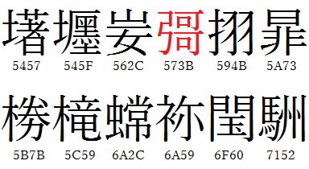

＜漢字七不思議 其ノ陸＞
どうも皆さん、こんにちは。
今回もマニアックな小話をします。
ぜひ気軽に見ていって下さいね。
あ、えっと、前の雰囲気ですか？
やっぱり慣れないことはするもんじゃ
ないですね。
誰も求めてないのに勝手にやって怪我してるだけですからね。
さて、今回は
今皆さんの画面上に映っているこの漢字は
PCやスマートフォンで打ち込めるわけです。
もちろん、JIS基本漢字として登録される漢字は
でも実際、登録されているものの中には、
「なぜ登録されたのか分からない謎の漢字」
が紛れていたりします。
例えば下のような漢字ですね。

出典：http://blog.livedoor.jp/itomata/archives/3852946.html
上記の漢字は通称
呼ばれています。
※赤字になっている漢字は後に
では、なぜこのような漢字が生まれてしまったのでしょうか。
まずは、「妛」に着目してみよう。
この文字は、いわゆる
(中略)
この字は本来は、山女の2字を縦に書いた「𡚴」という字で、「あけび」と読む国字だった。これは滋賀県の通称地名に存在し、この地名などが由来となった字である。
しかし、JIS C 6226-1978を作成する過程において作字をした際、
出典：通信用語の基礎知識 - 「妛」
・・・要するに、ただのミスである。
続いて、「挧」に着目してみよう。
この字は、JIS漢字にも収載された
(中略)
誤字の元字と考えられる「栩」は、地名にある。
かつての「徳島県麻植郡美郷村大字東山字栩谷」後の「徳島県吉野川市美郷栩谷」や、「京都府京都市北区西賀茂栩谷」などに用例がある。
出典：通信用語の基礎知識 - 「挧」
・・・これも、ただのミスである。
「椦」
この文字は、いわゆる
本来は「橳」(木偏に勝の旧字体)と書き、「ぬで」と読む字だった。これは文字採録時に、群馬県前橋市橳島町(ぬでじままち)の橳(ぬで)を誤写したものと考えられている。
出典：通信用語の基礎知識 - 「椦」
「暃」
この文字は、いわゆる
出典：通信用語の基礎知識 - 「暃」
「壥」
幽霊文字について調査した資料、「JIS X 0208:1997附属書7(参考)」の「区点位置詳説」、288ページの2.88は、「典拠 対応分析結果に見えず。収録典拠不明。土偏を欠く字体が、対応分析結果に見える(付属書7図37)。この字は、土部の13画に分類されているので、
出典：通信用語の基礎知識 - 「壥」
「椦」も「暃」も「壥」も・・・
やはり、こうなる運命のようだ。
かつての暗雲・・・
戻って来てしまいましたね。
編集者のミスで
生まれてしまった。
だが、用途がないなら
と思う方もいると思うが、事はそう単純ではない。
この影響を大きく受けたのは
(中略)
そこで、各社の漢和辞典は、競って改訂して
幽霊文字は、漢字というものを公的な基準に仕上げる際の難しさと、コマーシャリズムの不可思議さとを記念して、これからも末永く、漢和辞典の片隅に掲載され続けることでしょう。
出典：漢字文化資料館 - Ｑ0349
大人の事情で、
を辞典に載せることになってしまった。
もちろん、"典拠不明な漢字"自体は
元から存在するが、
辞典としてどうなのだろうか。
そしてもう一つ、"幽霊"を消せない理由は
(中略)
また、
(中略)
このようにUnicodeをはじめとする他規格との連繫はさらに複雑なものとなっており、規格変更という形での対処はやはりより
出典：JIS X 0208 - Wikipedia
少々分かりづらい話かもしれないが、
要するに
容易ではない正直私もよく分かっていない
たとえミスでも・・・。
やはりどんな分野でも、
深入りすると闇が見えてくる。
知れば知るほど"嫌になる"だろう。
そして貴方は
何処へ向かうのか・・・。
・・・。
もう逃げられないぞ
もうオチが思いつかないぞ